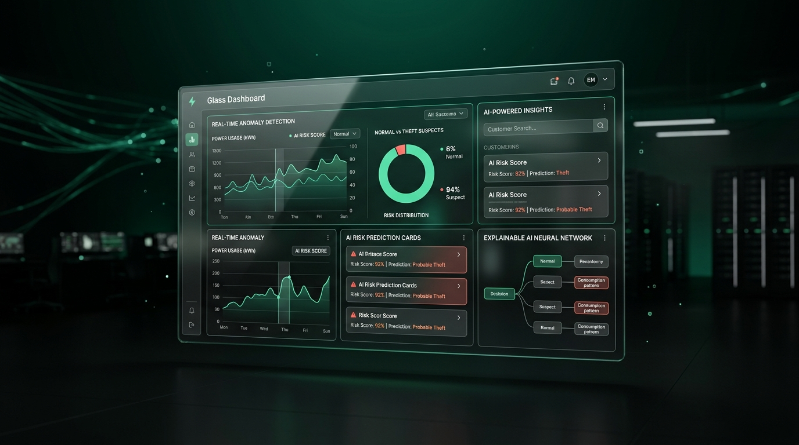
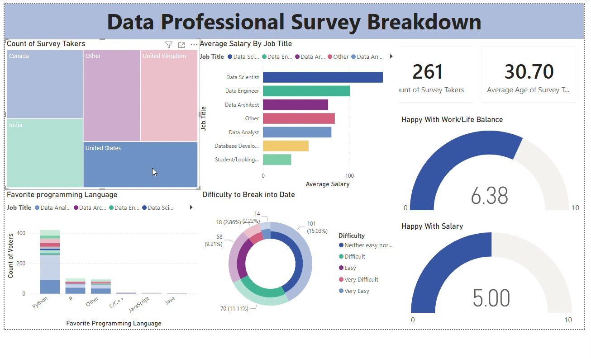
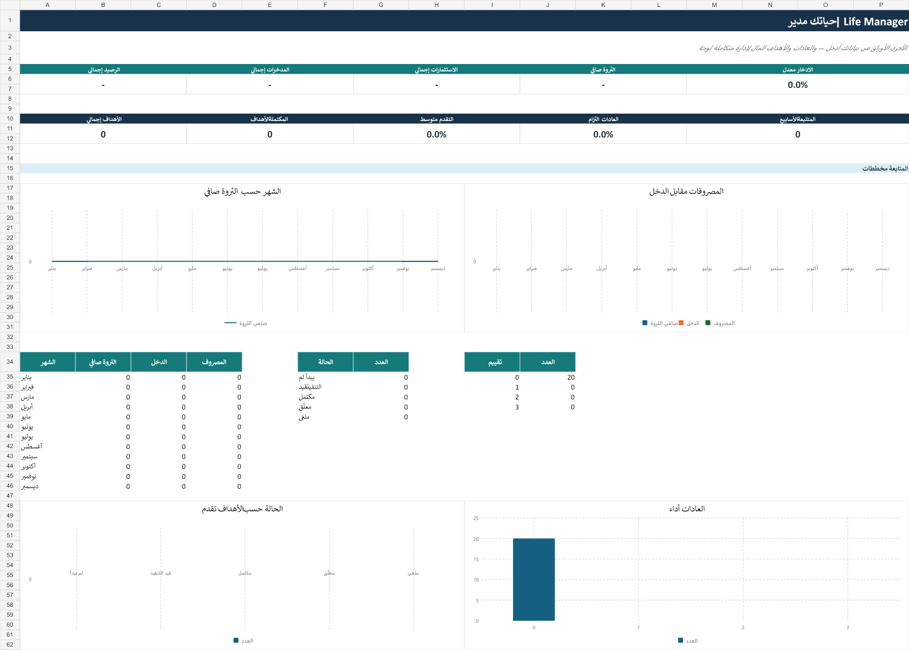
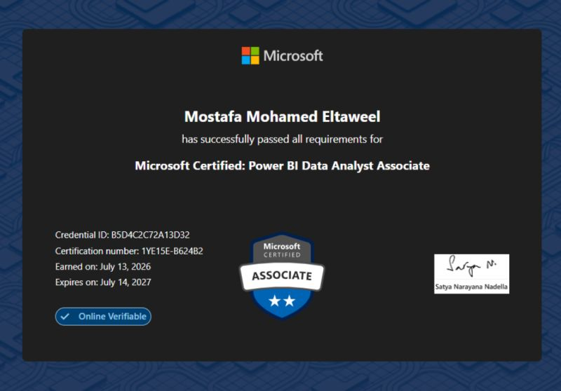
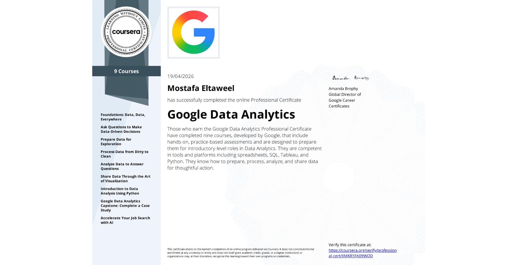

I turn operational and ERP data into models, KPIs, and dashboards that answer specific business questions—not decorative charts.
What I deliverClean data modelsDecision-ready dashboardsRepeatable reports
I'm a Data Analyst & AI Developer building practical dashboards, analytical models, and intelligent applications with Power BI, SQL, Excel, Python, and machine learning.
With a Bachelor of Laws from Cairo University, I bring a structured, evidence-based approach to every dataset. I prepare and validate data, build interactive dashboards, and translate business requirements into clear, actionable insights — certified in Microsoft Power BI (PL-300) and Google Data Analytics, with ongoing training in AI & Machine Learning.
Three areas I can contribute in today, backed by the work shown below—not a generic list of tools.
I turn operational and ERP data into models, KPIs, and dashboards that answer specific business questions—not decorative charts.
I build practical models around real workflows, validate the data carefully, explain predictions, and package the result in an interface people can use.
I remove repetitive hand-offs by connecting forms, APIs, databases, reports, and notifications with clear validation and failure paths.


 New
New

NewI design n8n workflows that connect data sources, APIs, business logic, and AI services—turning repetitive operations into monitored, reusable systems.
Webhook, schedule, form, or application event.
Clean, normalize, validate, and route the payload.
Classify, summarize, or extract structured data.
Update databases, sheets, and business systems.
Send reports, notifications, and status updates.
The experience behind my approach to data: operational support, structured analysis, and continuous technical learning.
Supported ERP users with system and data-related issues, prepared and cleaned business data for operational reporting, and worked with internal departments to improve reporting requirements and data workflows.
A Bachelor of Laws built my analytical reasoning and structured problem-solving through legal research, evidence-based analysis, and evaluating complex information from multiple sources.
Ongoing professional training in Power BI, SQL, Python, and Excel—applying statistics, data cleaning, machine learning, and neural networks to real-world dashboards and datasets.
Currently completing a Military Diploma in Data Analytics & AI at Digilians, on top of Microsoft and Google certifications.
A Bachelor of Laws from Cairo University gave me a structured, evidence-based approach to interpreting information — now applied to data.
Working from Giza, Egypt — open to remote and on-site Data Analyst roles and international collaborations.
Passionate about turning raw datasets into Power BI dashboards, SQL insights, and applied machine learning projects.
Certified in Microsoft Power BI Data Analytics (PL-300) and Google Data Analytics — with ongoing professional training in Data Analytics & Artificial Intelligence.

Validates the ability to transform raw data into interactive, business-focused insights — covering Power Query, data modeling, DAX, measures and time intelligence, dashboards, drill-through/bookmarks, and Power BI workspace & security management.

Nine-course program covering the full analytics workflow — Ask → Prepare → Process → Analyze → Share → Act — including spreadsheets, SQL, Tableau, Python for data analysis, and a capstone case study.
Ongoing professional training covering Power BI, SQL, Python, statistics, machine learning and neural networks, applied through hands-on dashboards, data models, and real datasets.